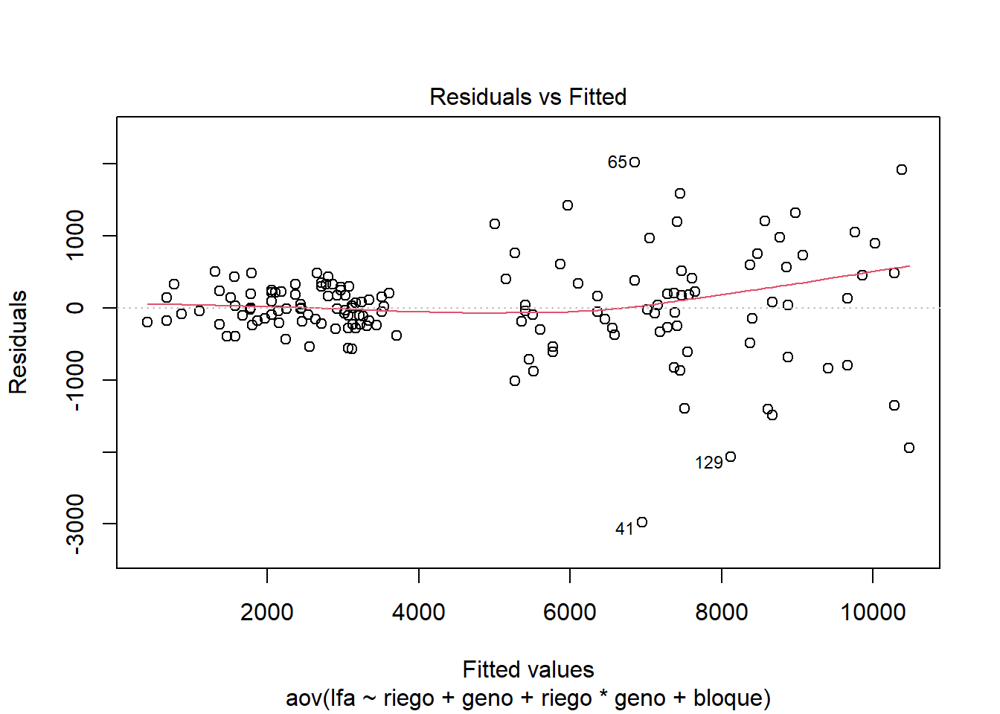

library(agricolae)rsalas
INFORME DCA Y DBCA
By: Rolando Salas López
Con la ayuda de ChatGPT, generar estos dos diseños (DCA y DBCA)
1.-Diseño completo al azar (DCA)
Para fines de este ejercicio se considera 4 dosis de fertilizacion nitrogenada:-0 -50 -100 -150
- Instalar y cargar el paquete agricolae
Vector de tratamientos (dosis de fertilización nitrogenada)
trt <- c(0, 50, 100, 150)
Definir el número de repeticiones
rep <- 5
Creación de un diseño de bloques completamente al azar (CRD) para el experimento ‘trt’ especifica los tratamientos, ‘r’ indica el número de repeticiones, y ‘seed’ establece la semilla para la aleatorización
dca <- design.crd(trt = trt, r = rep, seed = 123)Mostrar el diseño completo
print(dca)$parameters $parameters$design [1] "crd" $parameters$trt [1] 0 50 100 150 $parameters$r [1] 5 5 5 5 $parameters$serie [1] 2 $parameters$seed [1] 123 $parameters$kinds [1] "Super-Duper" $parameters[[7]] [1] TRUE $book plots r trt 1 101 1 50 2 102 1 0 3 103 2 0 4 104 2 50 5 105 3 0 6 106 4 0 7 107 1 150 8 108 1 100 9 109 3 50 10 110 2 100 11 111 3 100 12 112 4 50 13 113 4 100 14 114 2 150 15 115 3 150 16 116 5 100 17 117 4 150 18 118 5 50 19 119 5 0 20 120 5 150Restar 100 a los números de las parcelas si todos comienzan en 100
dca$book$plots <- dca$book$plots - 100
Nuevmente mostramos el diseño completo al azar, con los plots, que inicien en 1
print(dca)$parameters $parameters$design [1] "crd" $parameters$trt [1] 0 50 100 150 $parameters$r [1] 5 5 5 5 $parameters$serie [1] 2 $parameters$seed [1] 123 $parameters$kinds [1] "Super-Duper" $parameters[[7]] [1] TRUE $book plots r trt 1 1 1 50 2 2 1 0 3 3 2 0 4 4 2 50 5 5 3 0 6 6 4 0 7 7 1 150 8 8 1 100 9 9 3 50 10 10 2 100 11 11 3 100 12 12 4 50 13 13 4 100 14 14 2 150 15 15 3 150 16 16 5 100 17 17 4 150 18 18 5 50 19 19 5 0 20 20 5 150
2.-Diseño de bloques completo al azar (DBCA)
- Definimos los factores
library(agricolae)
dosis <-c(0,50,100,150)
variedad <-c("inia_1","inia_2")Crear todas las combinaciones posibles de dosis y variedad
tratamientos <- expand.grid(dosis = dosis, variedad = variedad)Unificar los tratamientos en una sola variable para ser utilizada en el diseño
tratamientos$trat <- paste(tratamientos$dosis, tratamientos$variedad, sep = "-")Crear el Diseño de Bloques Completos al Azar (DBCA) con 5 bloques
ds <- design.rcbd(trt = tratamientos$trat, r = 5)
Mostrar el diseño
ds$parameters
$parameters$design
[1] "rcbd"
$parameters$trt
[1] "0-inia_1" "50-inia_1" "100-inia_1" "150-inia_1" "0-inia_2"
[6] "50-inia_2" "100-inia_2" "150-inia_2"
$parameters$r
[1] 5
$parameters$serie
[1] 2
$parameters$seed
[1] -698361477
$parameters$kinds
[1] "Super-Duper"
$parameters[[7]]
[1] TRUE
$sketch
[,1] [,2] [,3] [,4] [,5]
[1,] "100-inia_2" "0-inia_1" "50-inia_1" "150-inia_2" "0-inia_2"
[2,] "0-inia_1" "50-inia_1" "100-inia_1" "150-inia_1" "50-inia_2"
[3,] "150-inia_2" "0-inia_1" "0-inia_2" "50-inia_2" "150-inia_1"
[4,] "0-inia_2" "0-inia_1" "150-inia_2" "100-inia_1" "150-inia_1"
[5,] "50-inia_2" "100-inia_1" "150-inia_1" "50-inia_1" "150-inia_2"
[,6] [,7] [,8]
[1,] "100-inia_1" "150-inia_1" "50-inia_2"
[2,] "0-inia_2" "100-inia_2" "150-inia_2"
[3,] "50-inia_1" "100-inia_1" "100-inia_2"
[4,] "50-inia_2" "100-inia_2" "50-inia_1"
[5,] "100-inia_2" "0-inia_1" "0-inia_2"
$book
plots block tratamientos$trat
1 101 1 100-inia_2
2 102 1 0-inia_1
3 103 1 50-inia_1
4 104 1 150-inia_2
5 105 1 0-inia_2
6 106 1 100-inia_1
7 107 1 150-inia_1
8 108 1 50-inia_2
9 201 2 0-inia_1
10 202 2 50-inia_1
11 203 2 100-inia_1
12 204 2 150-inia_1
13 205 2 50-inia_2
14 206 2 0-inia_2
15 207 2 100-inia_2
16 208 2 150-inia_2
17 301 3 150-inia_2
18 302 3 0-inia_1
19 303 3 0-inia_2
20 304 3 50-inia_2
21 305 3 150-inia_1
22 306 3 50-inia_1
23 307 3 100-inia_1
24 308 3 100-inia_2
25 401 4 0-inia_2
26 402 4 0-inia_1
27 403 4 150-inia_2
28 404 4 100-inia_1
29 405 4 150-inia_1
30 406 4 50-inia_2
31 407 4 100-inia_2
32 408 4 50-inia_1
33 501 5 50-inia_2
34 502 5 100-inia_1
35 503 5 150-inia_1
36 504 5 50-inia_1
37 505 5 150-inia_2
38 506 5 100-inia_2
39 507 5 0-inia_1
40 508 5 0-inia_2Modelo ANOVA
library(readxl) fb <- read_excel("LA MOLINA 2014 POTATO WUE (FB).xlsx", sheet = "fb") str(fb)tibble [150 × 18] (S3: tbl_df/tbl/data.frame) $ riego : chr [1:150] "sequia" "sequia" "irrigado" "sequia" ... $ geno : chr [1:150] "G01" "G02" "G01" "G02" ... $ block : num [1:150] 2 4 3 1 2 5 1 4 2 1 ... $ bloque : chr [1:150] "II" "IV" "III" "I" ... $ spad_29: num [1:150] 56.3 52.7 49.2 55.5 58.2 43.5 57.4 56.1 61 60.3 ... $ spad_83: num [1:150] 41.1 47.9 41.6 44.2 32.6 37.8 42.5 35.9 57.5 41.8 ... $ rwc_84 : num [1:150] 61.5 63.2 67.7 64.9 74.5 ... $ op_84 : num [1:150] -2.43 -3.03 -2.5 -2.4 -2.27 ... $ leafdw : num [1:150] 13.28 9.42 18.22 8.84 14.55 ... $ stemdw : num [1:150] 14.87 8.63 24.19 6.58 12.63 ... $ rootdw : num [1:150] 3.83 2.1 3.16 2 1.83 2.83 2.28 3.65 4.04 4.17 ... $ tubdw : num [1:150] 19.8 17.7 38 13.5 51.1 ... $ biomdw : num [1:150] 51.8 37.8 83.6 30.9 80.2 ... $ hi : num [1:150] 0.45 0.43 0.455 0.437 0.638 ... $ ttrans : num [1:150] 4.5 3.54 8.39 2.9 7.37 ... $ wue : num [1:150] 11.51 10.69 9.97 10.65 10.88 ... $ twue : num [1:150] 4.4 4.99 4.53 4.65 6.94 ... $ lfa : num [1:150] 2900 2619 7579 2450 5413 ...modelo <- aov(lfa ~ riego + geno + riego*geno + bloque, data = fb) anova(modelo)Analysis of Variance Table Response: lfa Df Sum Sq Mean Sq F value Pr(>F) riego 1 788556926 788556926 1433.7957 <2e-16 *** geno 14 261729564 18694969 33.9922 <2e-16 *** bloque 4 3435339 858835 1.5616 0.1892 riego:geno 14 108147972 7724855 14.0457 <2e-16 *** Residuals 116 63797516 549979 --- Signif. codes: 0 '***' 0.001 '**' 0.01 '*' 0.05 '.' 0.1 ' ' 1plot(modelo)


Comparacion de medias (test de Duncan)
library(agricolae) mc <- agricolae::duncan.test(y=modelo, trt = c("riego", "geno")) mc$statistics MSerror Df Mean CV 549978.6 116 4806.708 15.42855 $parameters test name.t ntr alpha Duncan riego:geno 30 0.05 $duncan Table CriticalRange 2 2.801028 928.9779 3 2.947907 977.6910 4 3.045555 1010.0768 5 3.117189 1033.8343 6 3.172876 1052.3034 7 3.217864 1067.2239 8 3.255217 1079.6123 9 3.286875 1090.1118 10 3.314137 1099.1534 11 3.337915 1107.0395 12 3.358871 1113.9897 13 3.377500 1120.1683 14 3.394183 1125.7013 15 3.409216 1130.6870 16 3.422835 1135.2039 17 3.435231 1139.3152 18 3.446561 1143.0726 19 3.456952 1146.5191 20 3.466514 1149.6904 21 3.475338 1152.6169 22 3.483500 1155.3239 23 3.491071 1157.8346 24 3.498115 1160.1708 25 3.504650 1162.3382 26 3.510752 1164.3621 27 3.516453 1166.2529 28 3.521778 1168.0190 29 3.526793 1169.6820 30 3.531442 1171.2240 $means lfa std r se Min Max Q25 Q50 irrigado:G01 7377.892 583.61443 5 331.656 6539.86 7982.73 7038.08 7578.79 irrigado:G02 5779.562 1127.71742 5 331.656 4631.00 7392.38 5162.74 5233.55 irrigado:G03 5416.770 89.80871 5 331.656 5305.77 5545.69 5369.88 5412.51 irrigado:G04 9668.932 945.94448 5 331.656 8569.08 10811.84 8867.03 9791.10 irrigado:G05 8878.756 1235.57574 5 331.656 7205.94 10291.06 8189.67 8913.12 irrigado:G06 7455.364 1009.33982 5 331.656 6576.65 9040.06 6857.13 6938.90 irrigado:G07 1374.156 411.10652 5 331.656 1065.26 1989.25 1068.97 1140.05 irrigado:G08 7286.826 282.80318 5 331.656 6998.00 7643.80 7012.74 7310.01 irrigado:G09 10287.712 1548.81007 5 331.656 8533.54 12296.22 8924.78 10764.71 irrigado:G10 5271.344 822.34789 5 331.656 4249.18 6164.24 4743.16 5171.21 irrigado:G11 6854.880 1888.72290 5 331.656 3966.33 8867.09 6210.41 7225.02 irrigado:G12 7417.258 946.24681 5 331.656 6111.43 8603.78 7164.03 7194.26 irrigado:G13 8672.380 1015.60193 5 331.656 7180.79 9743.70 8256.98 8750.00 irrigado:G14 8384.132 1473.21710 5 331.656 6049.52 9776.01 7895.00 8978.89 irrigado:G15 6367.026 107.45072 5 331.656 6270.00 6522.46 6302.79 6304.88 sequia:G01 3039.588 115.85242 5 331.656 2900.00 3203.70 2994.58 2999.66 sequia:G02 2717.050 281.05239 5 331.656 2449.59 3063.35 2487.28 2618.85 sequia:G03 2059.052 179.44660 5 331.656 1811.97 2274.48 1953.50 2107.76 sequia:G04 2978.712 302.61678 5 331.656 2511.13 3263.70 2889.83 3010.27 sequia:G05 1783.678 120.66794 5 331.656 1657.64 1967.49 1700.00 1771.80 sequia:G06 3348.074 165.94367 5 331.656 3159.54 3550.19 3198.96 3381.68 sequia:G07 680.734 335.90739 5 331.656 216.31 1097.98 495.83 782.10 sequia:G08 2373.624 260.99914 5 331.656 2021.37 2697.93 2278.60 2319.71 sequia:G09 3073.322 198.12400 5 331.656 2781.32 3238.41 2961.78 3150.00 sequia:G10 2924.648 235.40497 5 331.656 2541.12 3136.07 2909.10 2940.95 sequia:G11 2062.412 317.51100 5 331.656 1556.38 2301.31 1942.23 2237.88 sequia:G12 2446.404 37.06811 5 331.656 2400.00 2487.78 2425.26 2438.98 sequia:G13 3126.100 47.70803 5 331.656 3062.34 3191.97 3110.00 3120.00 sequia:G14 3514.338 217.30731 5 331.656 3318.36 3811.99 3326.93 3449.76 sequia:G15 1580.506 248.79682 5 331.656 1176.63 1814.84 1560.00 1601.06 Q75 irrigado:G01 7750.00 irrigado:G02 6478.14 irrigado:G03 5450.00 irrigado:G04 10305.61 irrigado:G05 9793.99 irrigado:G06 7864.08 irrigado:G07 1607.25 irrigado:G08 7469.58 irrigado:G09 10919.31 irrigado:G10 6028.93 irrigado:G11 8005.55 irrigado:G12 8012.79 irrigado:G13 9430.43 irrigado:G14 9221.24 irrigado:G15 6435.00 sequia:G01 3100.00 sequia:G02 2966.18 sequia:G03 2147.55 sequia:G04 3218.63 sequia:G05 1821.46 sequia:G06 3450.00 sequia:G07 811.45 sequia:G08 2550.51 sequia:G09 3235.10 sequia:G10 3096.00 sequia:G11 2274.26 sequia:G12 2480.00 sequia:G13 3146.19 sequia:G14 3664.65 sequia:G15 1750.00 $comparison NULL $groups lfa groups irrigado:G09 10287.712 a irrigado:G04 9668.932 ab irrigado:G05 8878.756 bc irrigado:G13 8672.380 c irrigado:G14 8384.132 cd irrigado:G06 7455.364 de irrigado:G12 7417.258 de irrigado:G01 7377.892 de irrigado:G08 7286.826 ef irrigado:G11 6854.880 ef irrigado:G15 6367.026 fg irrigado:G02 5779.562 gh irrigado:G03 5416.770 gh irrigado:G10 5271.344 h sequia:G14 3514.338 i sequia:G06 3348.074 ij sequia:G13 3126.100 ijk sequia:G09 3073.322 ijk sequia:G01 3039.588 ijk sequia:G04 2978.712 ijk sequia:G10 2924.648 ijk sequia:G02 2717.050 ijkl sequia:G12 2446.404 ijklm sequia:G08 2373.624 jklmn sequia:G11 2062.412 klmn sequia:G03 2059.052 klmn sequia:G05 1783.678 lmn sequia:G15 1580.506 mno irrigado:G07 1374.156 no sequia:G07 680.734 o attr(,"class") [1] "group"Comparacion de medias
#install.packages("emmeans") #install.packages("multcomp") #install.packages("tidyverse") library(tidyverse)── Attaching core tidyverse packages ──────────────────────── tidyverse 2.0.0 ── ✔ dplyr 1.1.4 ✔ readr 2.1.5 ✔ forcats 1.0.0 ✔ stringr 1.5.1 ✔ ggplot2 3.5.1 ✔ tibble 3.2.1 ✔ lubridate 1.9.3 ✔ tidyr 1.3.1 ✔ purrr 1.0.2 ── Conflicts ────────────────────────────────────────── tidyverse_conflicts() ── ✖ dplyr::filter() masks stats::filter() ✖ dplyr::lag() masks stats::lag() ℹ Use the conflicted package (<http://conflicted.r-lib.org/>) to force all conflicts to become errors
library(emmeans)Welcome to emmeans.
Caution: You lose important information if you filter this package's results.
See '? untidy'library(multcomp)Cargando paquete requerido: mvtnormCargando paquete requerido: survivalCargando paquete requerido: TH.dataCargando paquete requerido: MASS
Adjuntando el paquete: 'MASS'The following object is masked from 'package:dplyr':
select
Adjuntando el paquete: 'TH.data'The following object is masked from 'package:MASS':
geysermc <- emmeans(modelo, ~ riego | geno) %>%
data.frame()
mc riego geno emmean SE df lower.CL upper.CL
1 irrigado G01 7377.892 331.656 116 6721.00546 8034.779
2 sequia G01 3039.588 331.656 116 2382.70146 3696.475
3 irrigado G02 5779.562 331.656 116 5122.67546 6436.449
4 sequia G02 2717.050 331.656 116 2060.16346 3373.937
5 irrigado G03 5416.770 331.656 116 4759.88346 6073.657
6 sequia G03 2059.052 331.656 116 1402.16546 2715.939
7 irrigado G04 9668.932 331.656 116 9012.04546 10325.819
8 sequia G04 2978.712 331.656 116 2321.82546 3635.599
9 irrigado G05 8878.756 331.656 116 8221.86946 9535.643
10 sequia G05 1783.678 331.656 116 1126.79146 2440.565
11 irrigado G06 7455.364 331.656 116 6798.47746 8112.251
12 sequia G06 3348.074 331.656 116 2691.18746 4004.961
13 irrigado G07 1374.156 331.656 116 717.26946 2031.043
14 sequia G07 680.734 331.656 116 23.84746 1337.621
15 irrigado G08 7286.826 331.656 116 6629.93946 7943.713
16 sequia G08 2373.624 331.656 116 1716.73746 3030.511
17 irrigado G09 10287.712 331.656 116 9630.82546 10944.599
18 sequia G09 3073.322 331.656 116 2416.43546 3730.209
19 irrigado G10 5271.344 331.656 116 4614.45746 5928.231
20 sequia G10 2924.648 331.656 116 2267.76146 3581.535
21 irrigado G11 6854.880 331.656 116 6197.99346 7511.767
22 sequia G11 2062.412 331.656 116 1405.52546 2719.299
23 irrigado G12 7417.258 331.656 116 6760.37146 8074.145
24 sequia G12 2446.404 331.656 116 1789.51746 3103.291
25 irrigado G13 8672.380 331.656 116 8015.49346 9329.267
26 sequia G13 3126.100 331.656 116 2469.21346 3782.987
27 irrigado G14 8384.132 331.656 116 7727.24546 9041.019
28 sequia G14 3514.338 331.656 116 2857.45146 4171.225
29 irrigado G15 6367.026 331.656 116 5710.13946 7023.913
30 sequia G15 1580.506 331.656 116 923.61946 2237.393GRAFICAS
##install.packages("inti")
##install.packages("shiny")
library(inti)Cargando paquete requerido: shinylibrary(shiny)plot_smr(data = mc
, type = "bar"
, x = "geno"
, y = "emmean"
, group = "riego"
, sig = NULL
, error = "SE"
, ylimits = c(0, 12000, 2000)
)